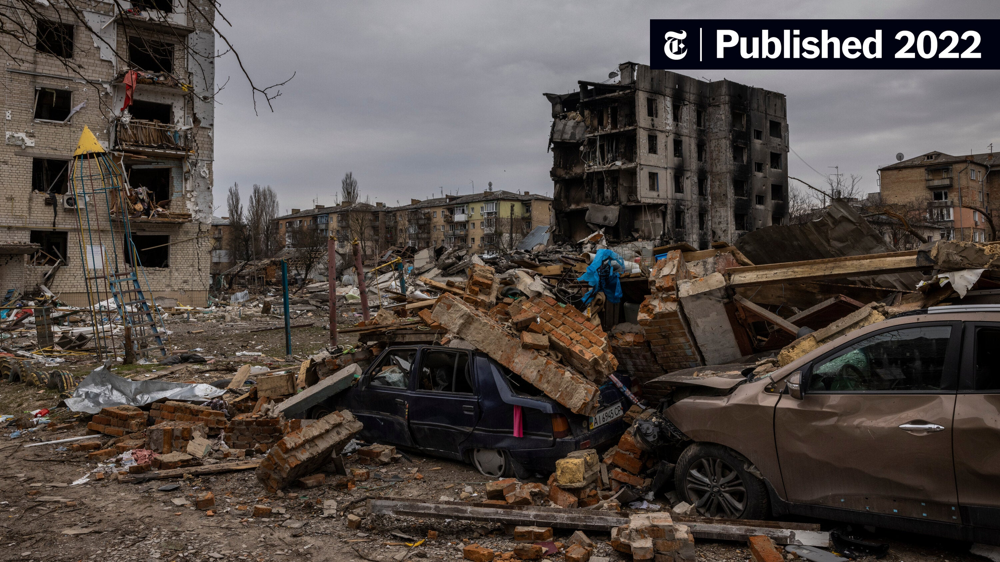
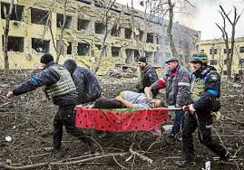
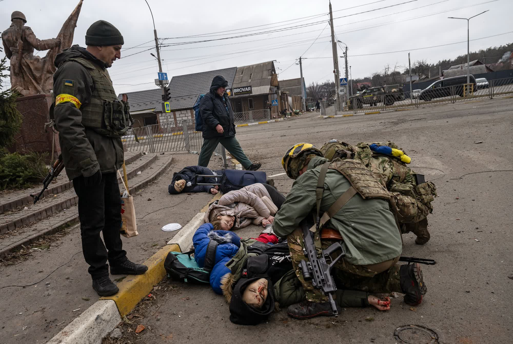

Specific Challenge: The War in Ukraine
The war in Ukraine that began in 2014, followed by full scale invasion in 2022 has affected Ukraine’s peace, governance structures and justice systems. Such long armed conflict that has resulted in the biggest war in Europe of this century after World War 2, is a direct threat to SDG 16.
Armed conflict always undermines peace, disrupts justice systems, limits human rights and weakens government institutions.



Impact on SDG 16 Targets
- Target 16.1 – Reduction of violence and related death rates.
- Target 16.2 – Ending abuse, exploitation and children trafficking.
- Target 16.3 – Promotion of the rule of law and equal access to justice.
- Target 16.6 – Effective, accountable and transparent institutions.
Military conflicts tend to fundamentally undermine court systems, delay processing, destroy legal evidence, displace legal staff and weaken governance capacity.